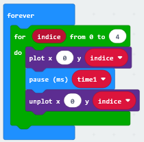
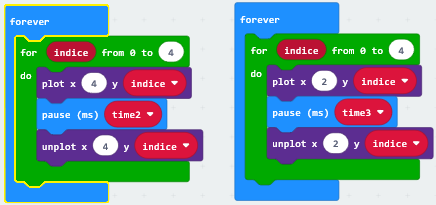
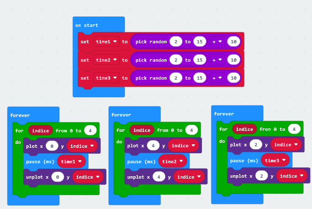
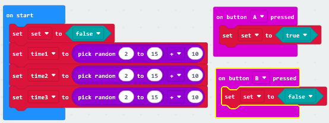
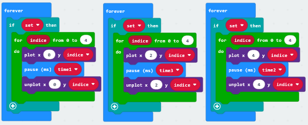
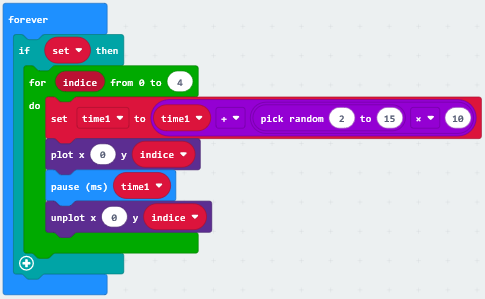
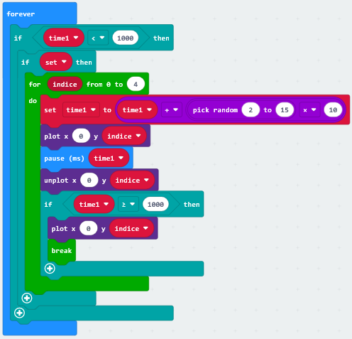
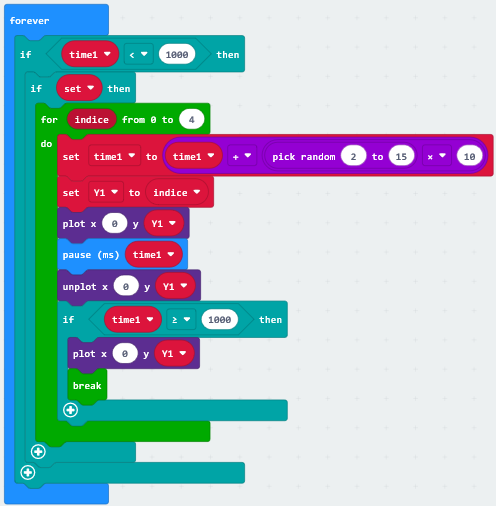

The aim is to align the three LEDs that “go down” on the same line. Button A is used to make start the game, button B is used to reset the game after a game and therefore be able to play a new one challenge.
| Code: Its construction | |
|---|---|
| The first step is to understand what we want to achieve visually on the led panel of the microbit, i.e. a light that travels down a column from top to bottom. In this case the column used is the leftmost one, corresponding to the spatial variable x always at 0; placing a plot-unplot pair, a for loop that covers the 5 interested positions and a pause that regulates me the speed of movement, I get what we set ourselves. Inside a forever I'm going to repeat this cycle forever. For the other two columns (x=2 and x=4), I repeat the same process since all loops forever of the same program are all processed together. |  |
|  | Let's try to run a little program like this, we will immediately see that the three bright dots travel
parallel our panel. We immediately realize that if we wanted to offset them, it would be enough to pause
of different value, even slightly. We could give each rest a proper name and declare it at the beginning,
indenting time1,time2 and time3 in the OnStart. As for the value (ms), not wanting to sound like too much
arbitrary, we left the matter to chance, making use of the appropriate mathematical operators. |
| We use the multiplier operator to give coherence and practicality to ours choice, being able to set random values with steps that are no longer unitary, which could be too small detached from each other. Now let's try to run this, quite a difference isn't it? | |
|  | |
|  | At this point emerges the need to start our dots when we decide it; For
each for loop we indent an if, the event that references it is a variable set to reactive action, therefore
we will use a button of the microbit, When we set the action, the for loops start working, to stop them
remember to prepare an antithetical button, in order to have complete control of the flow. There
variable will be of type boolean.Seeing is believing. |
|  | |
|  | We are at a good point, now let's face the first "challenge", i.e. slowing down the flow of our dots until they stop, otherwise we would see them flowing "from here to eternity", for put it James Jones. Let's proceed step by step: first of all let's slow down the dot, let's take la as an example column x=0, resetting the pause time at each cycle by adding a little; time1 equal to itself plus a small random value, in order to further deviate from deterministic methods and give variability to our functions. |
| Now we have to stop the cycle at a precise point. Who decides it? There
The answer varies according to the solution I want to adopt and the archetype of structure I have created so far. In
In this case I find it convenient to work on the pause time by establishing that once a certain amount has been exceeded (ascribed
in an if with a comparison operator) the powerful break function "kicks" me out of the loop. Foresight is
draw the last dot corresponding to the y set by index and place it ABSOLUTELY before break,
worth the loss of the dot. The whole function is indented in a further if, with the comparison operation of
inverse sign,, to avoid rewriting the dot in the position x=0;y=0. Similar work needs to be done too
for code blocks related to columns x=2 and x=4,trying with the MakeCode simulator it should go back to it
All. |
 |
| Done? Ready for the final rush? Well. Only one thing is missing, to make my microbit realize that if my three stop me on any line dots must tell me that I won. The request would seem quite simple, but in reality it hides a sneaky detail that only knowledge of how the microbit operates can elude. We easily come to understand to compare the spatial coordinates of the three dots relative to the columns, well, them coincide with the index word, representing a progressive number and repeated several times in the for loops "cadenza" the gait. It is the same for all three cycles, therefore, if this were the only problem, it would be enough make three nominal ones per column and proceed with the comparison. But they denote the nature of variable ONLY inside of the for loop and, when the break function carries out, their value is always reset to 0, so, the equalities would always be verified. |  |
| Still taking the column x=0 for example, let's do something very simple,
we define a new variable inside the for loop, call it y1, and set it to the value indicated by
index, so that when the coveted moment of the break arrives, the value y is extrapolated without being
reset. Let's mirror the related remaining blocks of code and proceed to the comparison.
The game is done and you did it! |
|